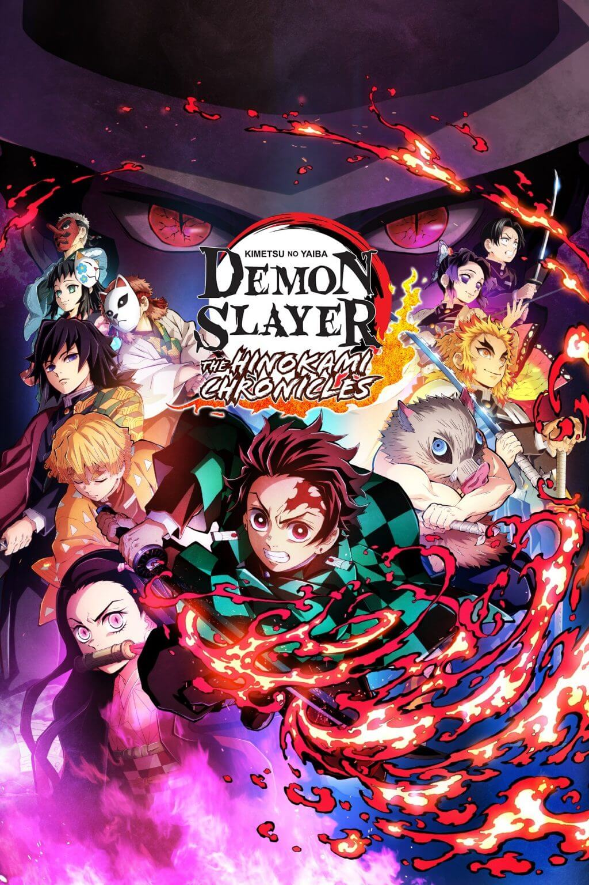

Introduction
While the original Big 3 defined the 2000s era of anime, a new generation of series has risen to dominate global streaming platforms and social media. Fans often refer to Jujutsu Kaisen, Demon Slayer, and My Hero Academia as the New Big 3 due to their massive popularity and cultural impact.
Jujutsu Kaisen
Created by Gege Akutami, Jujutsu Kaisen follows Yuji Itadori, a high school student who becomes involved in the dangerous world of curses after swallowing a powerful cursed object. The series is praised for its high-quality animation, intense fight choreography, and darker storytelling tone.

Demon Slayer
Demon Slayer, created by Koyoharu Gotouge, tells the story of Tanjiro Kamado, a kind-hearted boy who becomes a demon slayer after his family is slaughtered and his sister is turned into a demon. The anime gained worldwide recognition for its breathtaking animation and emotional storytelling.
My Hero Academia
Created by Kohei Horikoshi, My Hero Academia is set in a world where most people possess superpowers known as "Quirks." The story follows Izuku Midoriya, a boy born without powers who dreams of becoming a hero. The series blends superhero themes with traditional shonen storytelling.

Why They Are Considered the New Big 3
- Massive global streaming success
- High production animation quality
- Strong international fan communities
- Merchandise and box office dominance
- Strong presence on social media platforms